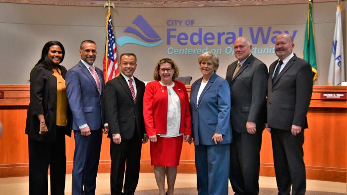

Image


Left to Right: Councilmember Assefa-Dawson, Councilmember McDaniel, Councilmember Tran, Councilmember Honda, Council President Kochmar, Councilmember Dovey, Councilmember Walsh
City Council Office
33325 8th Ave S
Federal Way, WA 98003
Amy Glandon
Executive Assistant to Council
253-835-2401
Email
Hours
Monday - Friday
8:00 am - 5:00 pm
Â